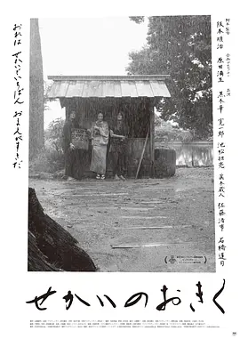

7.4
世界的阿菊
The World of Okiku
2023
日本
评分 7.4
导演:
阪本顺治
演员:
黑木华 / 宽一郎 / 池松壮亮 / 真木藏人 / 佐藤浩市
类型:
剧情,历史,爱情
剧情简介
江户末期的长屋中，街巷狭窄而拥挤，空气里混着湿土、炊烟及下层生活的粗粝气味。掏粪工清晨便扛着木桶穿行在这些巷道里，步伐匆忙却熟练，像是被时代逼着不断奔跑。在这片生活气息浓烈的贫民街，落魄至此的武家小姐阿菊悄然入住。她因变故失声，只能靠神情与简单动作与人沟通，独自撑起井井有条的日子。两个年轻掏粪工最先注意到她的安静与异样，一个直爽冲动，总爱用玩笑掩饰心思；另一个内敛温和，在忙碌中对她多一眼关照。阿菊的存在像一股微弱但清晰的风，慢慢穿透他们惯于粗糙处理的日常，让三人的关系在不言明的状态下逐步靠近。黑白影像放大了巷弄里的光影交错，也让他们之间细微的情绪更显真实。贫民街的吵杂、阶级的冷硬眼光与生活的不堪不断包围着阿菊，使她看似平静的生活随时可能被压垮。然而她在沉默里展现的坚韧，反而让两位掏粪工在粗粝的现实中找到一片柔软。影片用章节式叙事串起这些看似随意的日常碎片，让笑声、羞赧、彷徨与微小的光亮在黑白画面里缓缓流动，勾勒出三个年轻人在时代夹缝中彼此取暖的微妙情感。